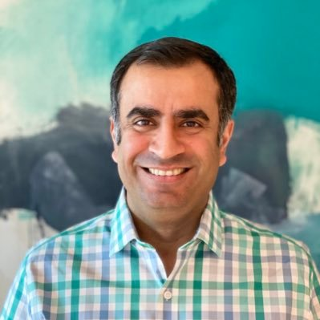
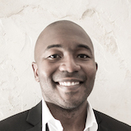

Invited Speakers

Assistant Professor, Harvard Medical School

Professor, School of Medicine, University of Colorado
Shandong Wu
Associate Professor, University of Pittsburgh
Associate Professor, University of Pittsburgh

Professor, Cornell University

Sumit Chopra
Associate Professor, NYU

Senior Research Scientist, NVIDIA
Adam Yala
Assistant Professor, UC Berkeley & UCSF
Assistant Professor, UC Berkeley & UCSF

Sanmi Koyejo
Assistant Professor, Stanford University